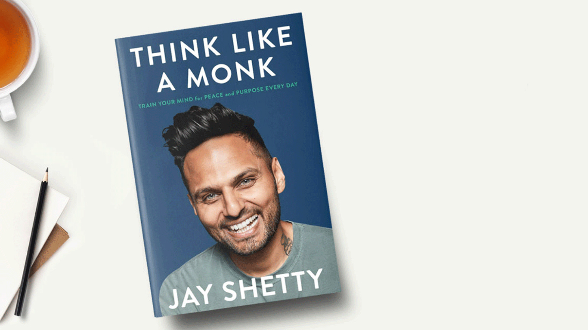

BOOKS
1.The Secret
2.Ikigai
3.The Alchemist
4.It Ends With Us
5.Rich Dad Poor Dad
6.Atomic Habits
7.Think Like A Monk
8.The Kite Runner
9.It Starts With Us
10.The Immortals Of Meluha
1.THE SECRET
The Secret is a 2006 self-help book by Rhonda Byrne, based on the earlier film of the same name.It is based on the belief of the pseudoscientific law of attraction, which claims that thoughts can
change a person's life directly.The Secret was released as a film in March 2006, and later the same year as a book.
2.IKIGAI
Ikigai (生き甲斐, lit.'a reason for being') is a Japanese concept referring to something that gives a person a sense of purpose, a reason for living.The Japanese word ikigai, which has recently
gained attention worldwide and enjoys widespread use, refers to a passion that gives value and joy to life.The author who prompted its craze speaks about the word’s appeal and the effects it has on
mental and physical health.
3.THE ALCHEMIST
Paulo Coelho's masterpiece tells the mystical story of Santiago, an Andalusian shepherd boy who yearns to travel in search of a worldly treasure. His quest will lead him to riches far different
and far more satisfying—than he ever imagined. Santiago's journey teaches us about the essential wisdom of listening to our hearts, recognizing opportunity and learning to read the omens strewn
along life's path, and, most importantly, following our dreams.
4.IT ENDS WITH US

It Ends with Us is a romance novel by Colleen Hoover, published by Atria Books on August 2, 2016. Based on the relationship between her mother and father, Hoover described it as "the hardest
book I've ever written."As of 2019, the novel had sold over one million copies worldwide and been translated into over twenty languages. A sequel titled It Starts with Us was published in
October 2022.
5.RICH DAD POOR DAD

Rich Dad Poor Dad is a 1997 book written by Robert T. Kiyosaki and Sharon Lechter. It advocates the importance of financial literacy (financial education), financial independence and
building wealth through investing in assets, real estate investing, starting and owning businesses, as well as increasing one's financial intelligence (financial IQ).Rich Dad PoorDad is
written in the style of a set of parables, ostensibly based on Kiyosaki's life.
6.ATOMIC HABITS

Atomic Habits by James Clear is a comprehensive, practical guide on how to change your habits and get 1% better every day. Using a framework called the Four Laws of Behavior Change,
Atomic Habits teaches readers a simple set of rules for creating good habits and breaking bad ones. Read the full summary to glean 3 key lessons from Atomic Habits, learn how to build
a habit in 4 simple steps, and get a handy reference guide for the strategies recommended throughout the book.
7.THINK LIKE A MONK

Jay Shetty, social media superstar and host of the number one podcast ‘On Purpose’, distils the timeless wisdom he learned as a practising monk into practical steps anyone can take
every day to live a less anxious, more meaningful life.Over the past three years, Jay Shetty has become a favourite in the hearts and minds of millions of people worldwide. One of his
clips was the most watched video on Facebook last year, with over 360 million views. His social media following totals over 32 million, he has produced over 400 viral videos, which
have amassed more than 5 billion views, and his podcast, ‘On Purpose’, is consistently ranked the world’s #1 health-related podcast.
8.THE KITE RUNNER

The Kite Runner is the first novel by Afghan-American author Khaled Hosseini.[1] Published in 2003 by Riverhead Books, it tells the story of Amir, a young boy from the
Wazir Akbar Khan district of Kabul. The story is set against a backdrop of tumultuous events, from the fall of Afghanistan's monarchy through the Soviet invasion, the exodus of refugees
to Pakistan and the United States, and the rise of the Taliban regime.
9.IT STARTS WITH US
It Starts with Us is a romance novel by Colleen Hoover, published by Atria Books on October 18, 2022.It is the sequel to her 2016 best-selling novel It Ends with Us.
The sequel was first announced in February 2022.It became Simon & Schuster's most pre-ordered book of all time.Hoover wrote the novel as a "thank you" to fans of the first novel.
10.THE IMMORTALS OF MELUHA
The Immortals of Meluha is the first book of Amish Tripathi, first book of Amishverse, and also the first book of Shiva Trilogy. The story is set in the land of Meluha and starts with
the arrival of the Shiva. The Meluhans believe that Shiva is their fabled saviour Neelkanth. Shiva decides to help the Meluhans in their war against the Chandravanshis.